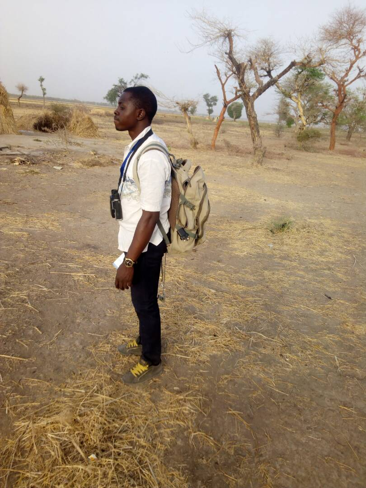
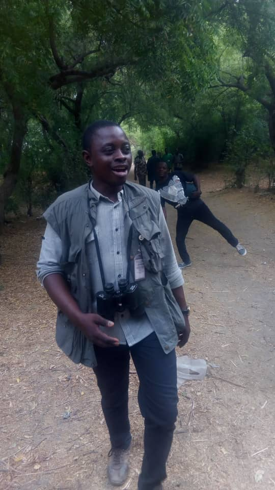
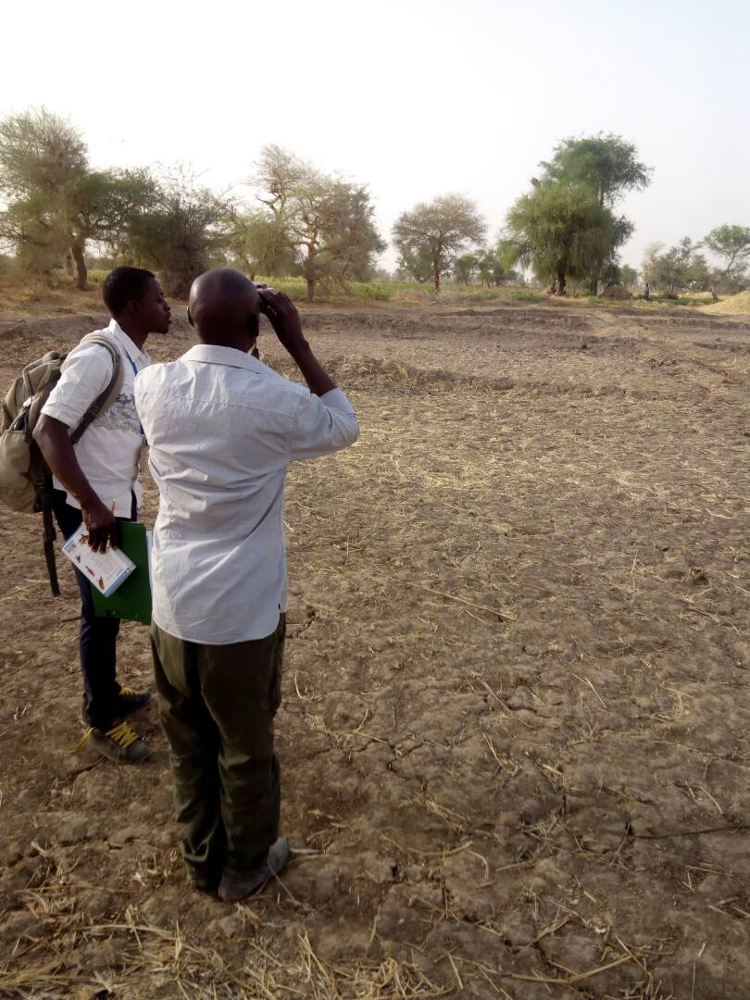
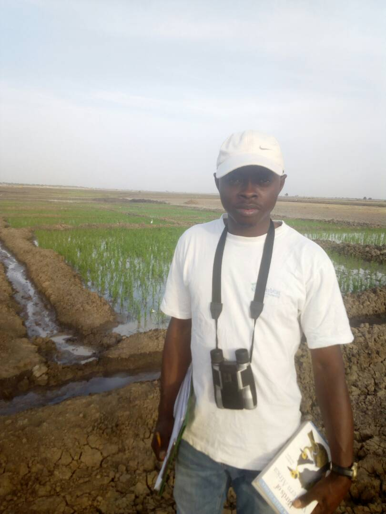
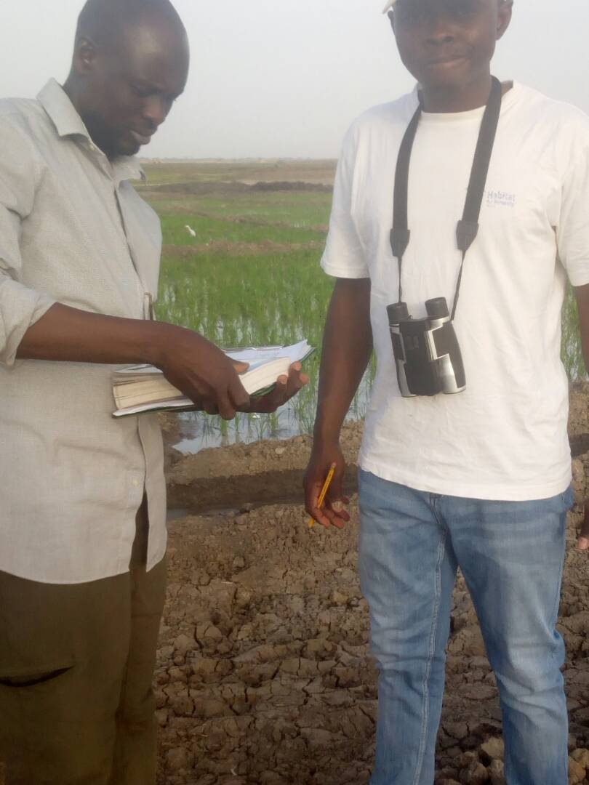
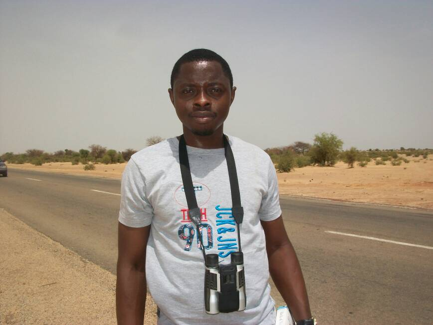
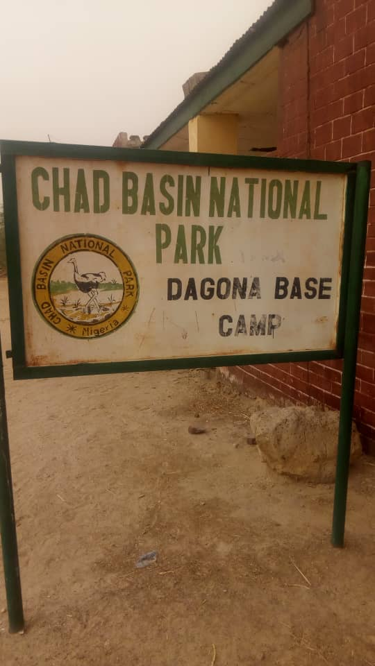
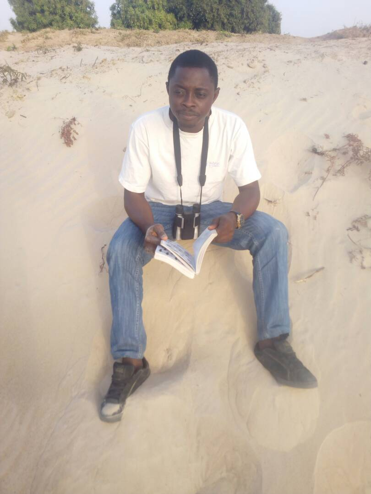
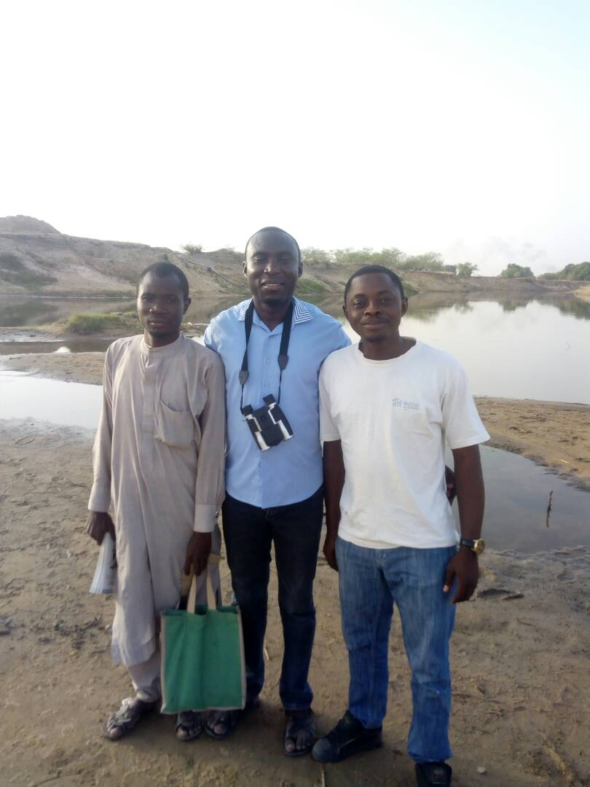

Bird survey in the Sahel — scanning dryland habitat during pentad surveys for the Nigeria Bird Atlas Project.

Ecological survey along forest trails at Chad Basin National Park, Dagona sector.

Paired bird survey — one observer scanning, one recording — across Sahel dryland habitat.

Wetland bird survey at rice paddy habitat with binoculars and the Birds of Western Africa field guide.

Recording species observations at a wetland survey site near Gashua.

Roadside bird survey in the Sahel — binoculars and field notes in hand.

Chad Basin National Park, Dagona Base Camp — a key field site for student excursions and ecological research.

Consulting the field guide between survey transects at the Bade catchment area.

Survey team at the Bade catchment — collaborative bird monitoring along the river.